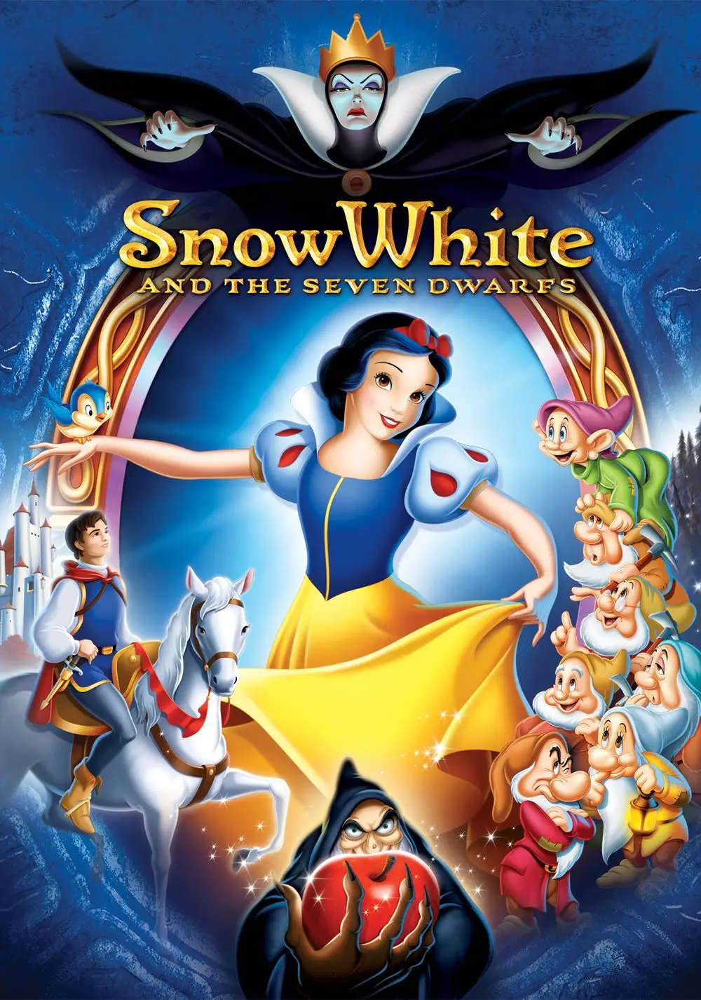

Snow White and the Seven Dwarfs is a 1937 American animated musical fantasy film produced by Walt Disney Productions and released by RKO Radio Pictures. Based on the 1812 German fairy tale by the Brothers Grimm, it is the first full-length traditionally animated feature film and the first Disney animated feature film.
Snow White premiered at the Carthay Circle Theatre in Los Angeles, California on December 21, 1937.
What the film is about
The plot is set into motion when a vain, wicked queen consults her magical mirror and learns that her beautiful stepdaughter, Snow White, is now the “fairest in the land.” Instantly resentful, the queen enlists a woodsman to murder Snow White, but he cannot commit the act and exhorts the young girl to escape. In the forest Snow White discovers a cottage inhabited by seven eccentric dwarfs, who warmly welcome her into their home after she offers to cook and clean for them. The queen eventually learns of Snow White's whereabouts and, disguising herself as an old hag, fatally poisons her stepdaughter with a tainted apple. The heartbroken dwarfs stand guard over the girl's body until a handsome prince restores her to life with a kiss.
Click here to find out more.